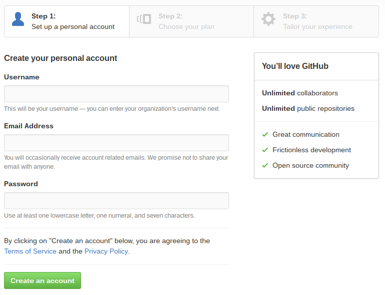
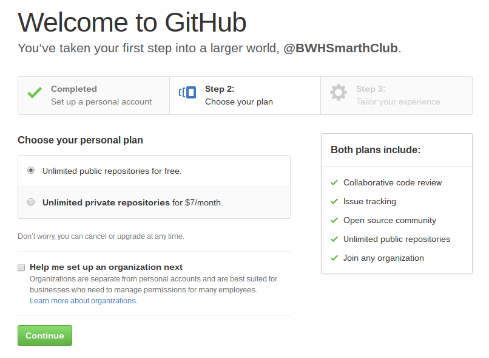
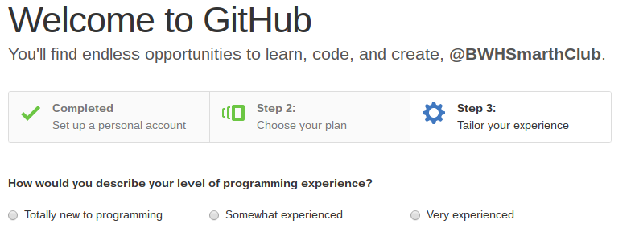
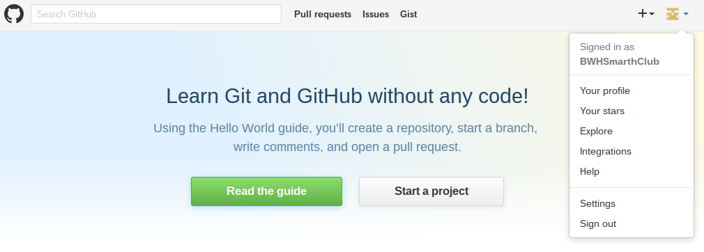
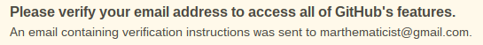

-
Create a GitHub Account
-
Create your first project
-
Make it do something interesting
-
Make it your own
GETTING STARTED: 1. Create a GitHub account
In Part 1, you will create a GitHub account. It will serve as a portfolio of your creations and also allow you to easily share what you make with others. GitHub is a site that professional programmers use to organize their files and work with each other.
A note about being responsibile internet user: Take care when you choose your GitHub username. It is never a good idea to use your actual name for website usernames. GitHub is a public resource, and anybody will be able to see anything you do on it. Many people list their GitHub account on job and college applications because it gives a great snapshot of a person's abilities and growth in coding. You never know where this adventure will take you, so don't pick a username that will make you blush when it is brought up in an interview years from now...
OK. Let's do this.
Go to github.com and click the green "Sign up" button.
Enter your new username, e-mail address, and password, and click "Create and account"

You'll be asked to choose your plan. Pick the free option, and click "Continue".

Next you will be asked to provide some information about yourself. This is entirely optional. Provide whatever info you want to (or none), and click "Submit" or "skip this step".

...

That's it! You've created your online coding portfolio!
Click the drop-down menu in the upper-right corner, and select "Your Profile" to go to the main profile view.

You will see the following page. We will start here in Part 2.

NOTE: At some point you will be prompted with a message like this:

GitHub is asking you to verify your e-mail. When this happens, just log in to you e-mail account, open the e-mail from GitHub, and click the link provided.
When you're ready, click the link below to go to Part 2.
Go to Part 2: Create your first project